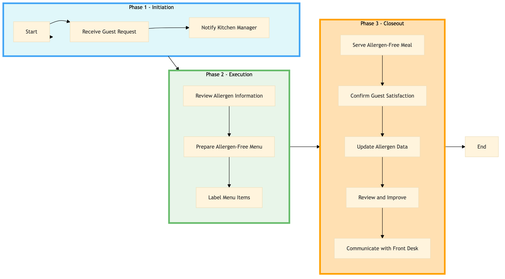

| Role | Steps |
|---|---|
| Front Desk Agent | 1.1 1.2 |
| Kitchen Manager | 2.1 2.2 2.3 3.3 |
| Kitchen Staff | 2.3 |
| Waitstaff | 3.1 3.2 |
| Executive Chef | 3.4 3.5 |
| Step | Name | Role | System | Input | Output | KPI | Dec? | Exc? | Pain Point / Risk |
|---|---|---|---|---|---|---|---|---|---|
| 1.1 | Receive Guest Request | Front Desk Agent | Oracle OPERA Cloud | Guest request for allergen-free meal or specific allergy warning label | Updated guest profile in Oracle OPERA Cloud with dietary preferences | Less than 2 minutes per request | N | Y | Handling multiple requests simultaneously and ensuring accuracy |
| 1.2 | Notify Kitchen Manager | Front Desk Agent | Oracle OPERA Cloud | Updated guest profile | Notification to Kitchen Manager via Oracle OPERA Cloud | Less than 1 minute | N | Y | Ensuring timely communication between departments |
| 2.1 | Review Allergen Information | Kitchen Manager | Oracle OPERA Cloud, Oracle MICROS Simphony | Notification from Front Desk Agent | Verified allergen information for menu items | Less than 5 minutes per item | Y | N | Accessing and verifying accurate allergen data |
| 2.2 | Prepare Allergen-Free Menu | Kitchen Manager | Oracle MICROS Simphony | Verified allergen information | Allergen-free menu for the guest | Less than 10 minutes | N | Y | Managing kitchen workflow and ensuring timely preparation |
| 2.3 | Label Menu Items | Kitchen Staff | Oracle MICROS Simphony, Knowcross HotSOS | Allergen-free menu | Properly labeled menu items | Less than 2 minutes per item | N | Y | Consistency in labeling and accuracy |
| 3.1 | Serve Allergen-Free Meal | Waitstaff | Oracle OPERA Cloud, Oracle MICROS Simphony | Properly labeled menu items | Served allergen-free meal to guest | Less than 5 minutes | N | Y | Handling multiple tables and ensuring correct serving |
| 3.2 | Confirm Guest Satisfaction | Waitstaff | Oracle OPERA Cloud | Served allergen-free meal | Guest satisfaction confirmation in Oracle OPERA Cloud | Less than 1 minute | Y | N | Ensuring guest feedback and addressing any issues |
| 3.3 | Update Allergen Data | Kitchen Manager | Oracle MICROS Simphony, Oracle OPERA Cloud | Guest satisfaction confirmation | Updated allergen data in Oracle MICROS Simphony and Oracle OPERA Cloud | Less than 5 minutes | N | Y | Maintaining up-to-date allergen information |
| 3.4 | Review and Improve | Executive Chef | Oracle MICROS Simphony, Oracle OPERA Cloud | Updated allergen data | Improvement plan for allergen management | Less than 1 hour per week | Y | N | Continuous improvement and process optimization |
| 3.5 | Communicate with Front Desk | Executive Chef | Oracle OPERA Cloud | Improvement plan | Communication to Front Desk Agent via Oracle OPERA Cloud | Less than 10 minutes | N | Y | Effective communication across departments |
This process ensures proper allergen management and labeling in full-service Marriott hotels to comply with food safety regulations and cater to guests with dietary restrictions.